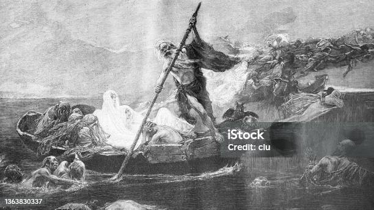

As Orpheus descends to the Underworld, he encounters the three headed dog Cerberus who is the guardian (and/or pet) of Hades. Orpheus plays his Lyre for the dog and soothes him. Afterwards he confronts Hades and Hades' wife Persephone and he sings them a song to win their favor, so Hades gives Orpheus a chance to get Eurydice back. To do so, however, he must walk from the Gates of Hades back to the world of the living without looking back even once, and if he looks back he will lose Eurydice forever.
In classic Greek tragedy fashion, Orpheus begins to feel doubt throughout his journey and right as he passes into the world of the living he looks back to see his wife's face, but Eurydice hasn't passed the threshold yet and is cast back into the Underworld.